#9746 Overboard
 gesehen am 26.10.2018
gesehen am 26.10.2018
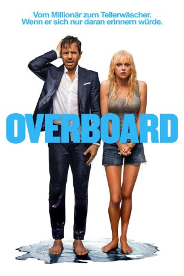 
 IMDB-Wertung: 5.9 / 10
IMDB-Wertung: 5.9 / 10  Tomatometer: 24
Tomatometer: 24  Metascore: 42
Metascore: 42 
Der verwöhnte und wohlhabende Yachtbesitzer und mexikanische Macho Leonardo (Eugenio Derbez) behandelt seine Angestellten wie den letzten Dreck. Als er eines Tages von Bord seines Schiffes fällt und sein Gedächtnis verliert, nutzt seine zuvor gefeuerte putzende Angestellte Kate (Anna Faris), die alleinerziehende Mutter dreier Kinder, das aus und gönnt sich den unerwarteten Luxus.
Jahr: 2018
Dauer: 112 Minuten
FSK: 0
Land: USA Studio: LionsgateTonspuren: DTS - ,
Untertitel: Deutsch, Englisch,
Auflösung: 1080p (1920x808) Größe: 5498 MB
Genre: Komödie, Liebe
Regisseur: Rob Greenberg
Drehbuch: Bob Fisher, Rob Greenberg, Leslie Dixon, Leslie Dixon
Soundtrack: Lyle Workman
Darsteller:
- 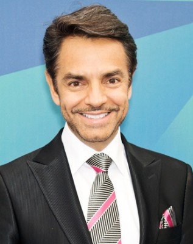 Eugenio Derbez als Leonardo Montenegro
- 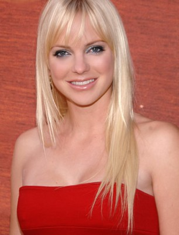 Anna Faris als Kate Sullivan
- 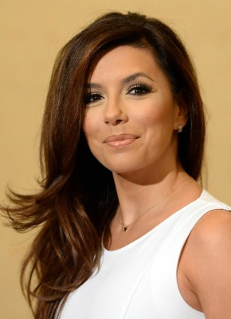 Eva Longoria als Theresa
- 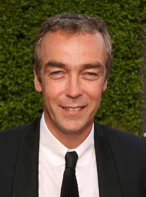 John Hannah als Colin
- 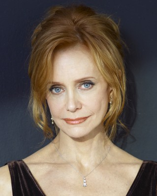 Swoosie Kurtz als Grace
- 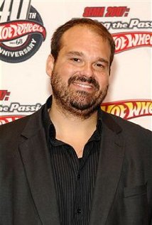 Mel Rodriguez als Bobby
- 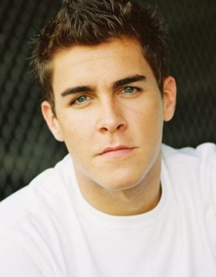 Josh Segarra als Jason
- Hannah Nordberg als Emily Sullivan
- Alyvia Alyn Lind als Olivia Sullivan
- Payton Lepinski als Molly Sullivan
- Fernando Luján als Papi
- Cecilia Suárez als Magdalena
- Mariana Treviño als Sofia
- 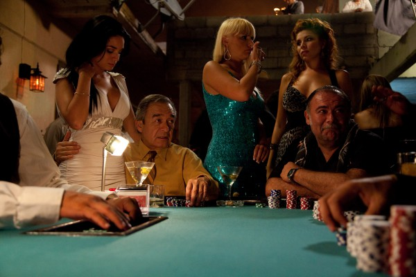 Jesús Ochoa als Vito
- Omar Chaparro als Burro
- Edgar Vivar als Gastroenterologist
- Per Graffman als Captain
- Nils Hognestad als First Mate
- Thomas Nicholson als Crew Member
- Javier Lacroix als Cook
- Edwin Perez als Dishwasher
 Garry Chalk als Dr. Fletcher
Garry Chalk als Dr. Fletcher- Darla Fay als Receptionist
- Toby Hargrave als Boat Mechanic
- 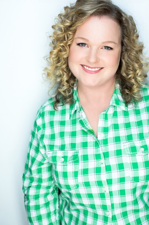 Elizabeth Bowen als Boat Mechanic's Wife
- 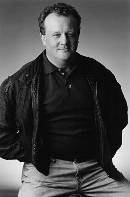 Eric Keenleyside als One-Arm Sheriff
- Emily Maddison als Amanda
- Cynthia Mendez als Lucia
- Angie Larocque als Genevieve
- Michael Karl Richards als Rich Client
- Linda Pollard als Female Mikado Performer
- David Mathews als Male Mikado Performer
- Celeste Ziegler als Jet Skier #2
- Stephi Chin-Salvo als Jet Skier #3
- Tara Erica Moore als Party Girl
- Guy Christie als Flag Football Parent
 Ron Bottitta als Soccer Commentator (uncredited)
Ron Bottitta als Soccer Commentator (uncredited)- Natalie Kay Dunn als Grocery Store Patron (uncredited)
- Adrian Uribe als Burrito
- Morgan Brayton als Nurse
- Natalia Stenz als Rich Client's Girlfriend
- Kerry O'Donovan als Musical Director
- Lia Farrelly-Hodge als Jet Skier #1
- Lee Shan Gibson als Cop
- Liam Tait als Lifeguard
- Jody Glenham als Club Band - Bass
- Daniel Ruiz als Club Band - Drums
- Israel Ogunsakin als Club Band - Guitar
- Luis Meglar als Club Band - Trombone
- Malcolm Aiken als Club Band - Trumpet
Datei: X:\2018(N-Z)\Overboard (2018, FSK0, 1920x808).mkv seit 26.10.2018
Festplatte: HD 2018(G-Z)-2019(A-Z)
 Es gibt insgesamt 172 Filme in der Gruppe '2018(N-Z)'
Es gibt insgesamt 172 Filme in der Gruppe '2018(N-Z)'